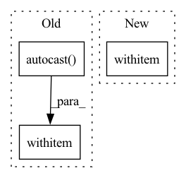

Pattern ID :34427
Before Change
"""
// 计算loss
if self.mixed_precision:
with self.autocast() :
output = self._forward(train_X)
loss_detail = self.criterion(output, train_y)
else:After Change
"""
// 计算loss
if self.mixed_precision:
with self .autocast(dtype=torch.float16 if self.mixed_precision=="fp16" else torch.bfloat16):
output = self._forward(train_X)
loss_detail = self.criterion(output, train_y)
else:In pattern: SUPERPATTERN
Frequency: 3
Non-data size: 3
Instances Fragment ID: 98769886
Project Name: tongjilibo/torch4keras
Commit Name: 21b0b2533541424cdaf429cb058e1300c8bb1119
Time: 2023-02-11
Author: tongjilibo@163.com
File Name: torch4keras/model.py
M Class Name: Trainer
N Class Name: Trainer
M Method Name: train_step(3)
N Method Name: train_step(3)
M Parent Class:
N Parent Class:
M File Name: torch4keras/model.py
N File Name: torch4keras/model.py
M Start Line: 100
M End Line: 105
N Start Line: 101
N End Line: 106
Before Change
data = self._fetch_from(dataset, rank, self.config.batch_train)
with amp.autocast(enabled=self.config.use_amp) :
metrics = self.spec.train_objective(data, model)
loss = metrics["loss"]
After Change
loss = metrics["loss"]
if self.config.use_amp:
with amp .scale_loss(loss, optimizer) as scaled_loss:
scaled_loss.backward()
else:
loss.backward() Fragment ID: 98769885
Project Name: affjljoo3581/gpt2
Commit Name: f7af3a138cb7c96f9518fa8c418a03a601fa5a50
Time: 2020-09-08
Author: affjljoo3581@gmail.com
File Name: src/gpt2/training/training.py
M Class Name: Trainer
N Class Name: Trainer
M Method Name: _train_step(6)
N Method Name: _train_step(7)
M Parent Class: object
N Parent Class: object
M File Name: src/gpt2/training/training.py
N File Name: src/gpt2/training/training.py
M Start Line: 154
M End Line: 171
N Start Line: 166
N End Line: 175
Before Change
should_step = self.step % self.grad_accumulation_factor == 0
// Managing automatic mixed precision
if self.auto_mix_prec:
with torch.cuda.amp.autocast() :
outputs = self.compute_forward(batch, sb.Stage.TRAIN)
// Losses are excluded from mixed precision to avoid instabilitiesAfter Change
should_step = self.step % self.grad_accumulation_factor == 0
// Managing automatic mixed precision
if self.auto_mix_prec:
with torch .autocast(torch.device(self.device).type):
outputs = self.compute_forward(batch, sb.Stage.TRAIN)
// Losses are excluded from mixed precision to avoid instabilities Fragment ID: 98769884
Project Name: speechbrain/speechbrain
Commit Name: 2f33f0ca3bd6da64f33f2dee4bc134e1ef4cc905
Time: 2023-03-24
Author: parcollet.titouan@gmail.com
File Name: recipes/LibriSpeech/ASR/transformer/train.py
M Class Name: ASR
N Class Name: ASR
M Method Name: fit_batch(2)
N Method Name: fit_batch(2)
M Parent Class: sb.core.Brain
N Parent Class: sb.core.Brain
M File Name: recipes/LibriSpeech/ASR/transformer/train.py
N File Name: recipes/LibriSpeech/ASR/transformer/train.py
M Start Line: 244
M End Line: 271
N Start Line: 244
N End Line: 269